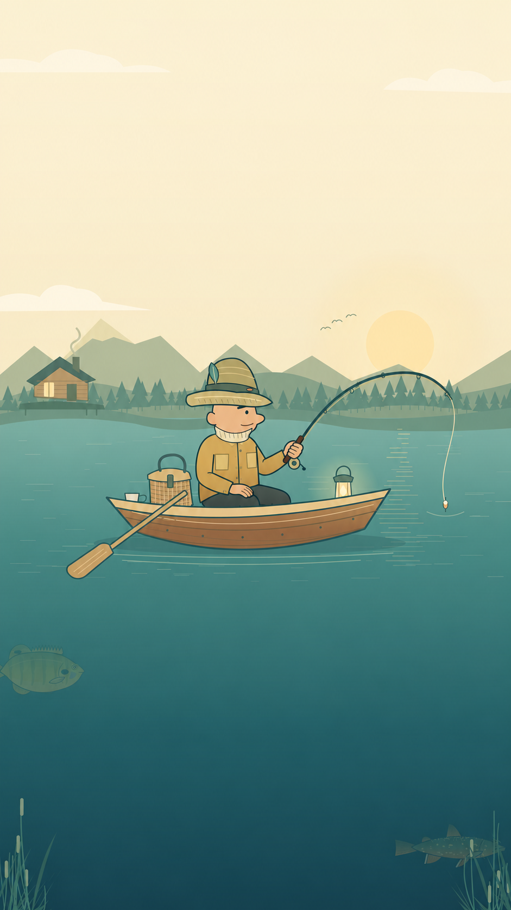
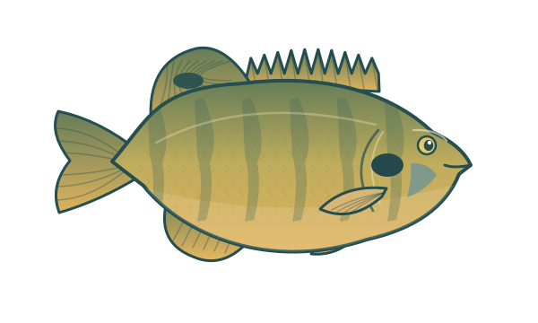
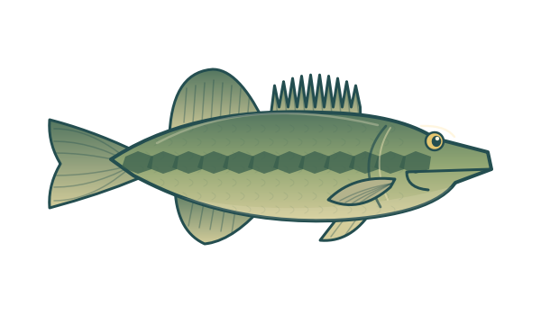
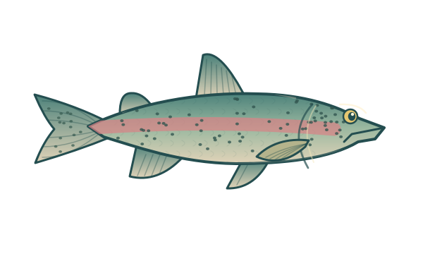

两次轻点20 种鱼类离线游玩无广告与应用内购买
找到你的节奏
第一拍看位置，
第二拍看时机。
鱼钩会自动抛出。观察船下真正游动的鱼，选好目标，再把握收竿的那一刻。
01
轻点，下扎
鱼钩垂直向下，第一条实际碰到的鱼，就是这一竿的目标。
02
对圈，收竿
大圆缩到目标圈时，再点一下。小鱼更从容，大鱼更考验手感。
03
入篓，再来
鱼进竹篓后自动续投。失手会结束这一天，点“第二天再来”就能立即开新局。
一本属于你的鱼册
每一条小鱼，都算数。
发现 20 种淡水鱼插画。真正进篓的鱼都会记入本机鱼册，每一天的鱼获继续累积。



口袋里的小湖
坐一会儿，再抛一竿。
不需要账号或联网。音乐、音效、触觉和动态效果都可以在设置中调整；随时切换中英文，不会重置鱼册。